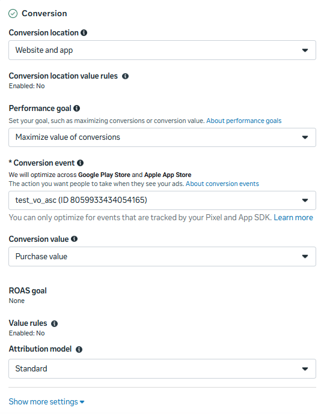
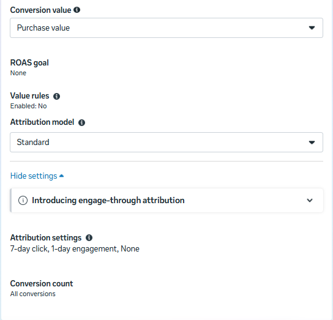
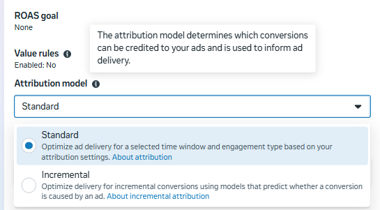
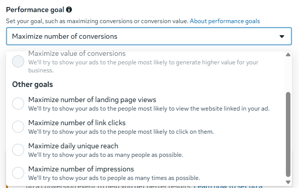
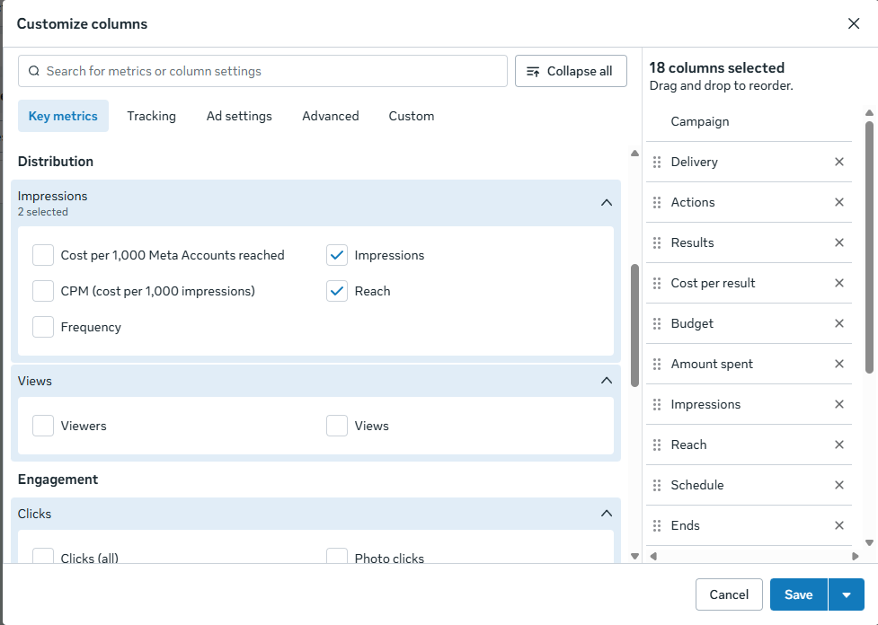
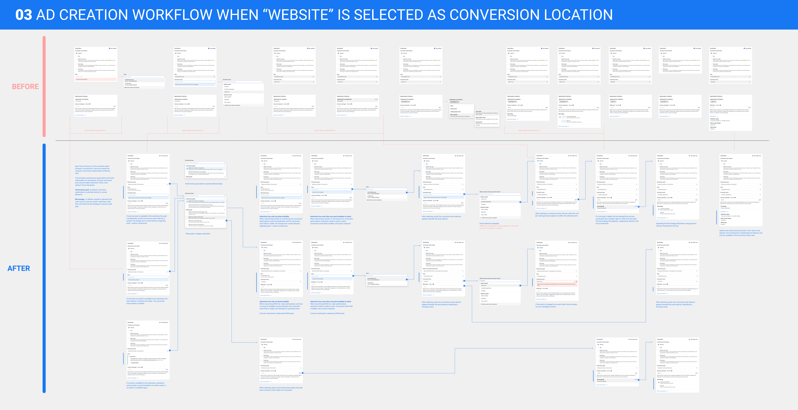

Content Design Lead, Core Ads · 2020 - 2026
Meta
Turning advertiser intent into revenue
I led content design for the products that capture an advertiser's goals and turn them into business outcomes like website purchases, lead generation and brand awareness. These products include bidding, budget, audience targeting, optimization and attribution. In this world, a confusing label has a direct impact on revenue and advertiser trust.
These four projects highlight some of my work end to end:
Building a taxonomy to unblock 7+ new products
My roleContent lead spanning both orgs
Problem space
Different product teams had their own definitions for the value of a conversionAn action a user takes after seeing an ad. For example, buying something on a website or completing a registration form.. Meanwhile, these teams were introducing new ad delivery models to optimize for higher:
- Purchase value of a product
- Profit margin of a product
- Predicted lifetime value of a user
Risk: Advertisers comparing features side by side would see conflicting language for the same underlying concept.
Content challenge: Build a shared vocabulary loose enough for teams to build independently, but strict enough to stay coherent at scale.
My approach
- Mapped the system before writing. I mapped every state of the flow so terminology decisions were grounded in real world needs.
- Built the shared Value taxonomy. Created internal categories (Value Expression, Absolute Value, Relative Value) that became the common language for engineering, product, and design across 5 teams.
- Named 7+ products with research. Developed end-to-end terminology for 6 new value products, stress-testing names across surfaces, running experiments, and coordinating legal and stakeholder reviews.
- Wrote the rules, not just the names. Documented when each term applied and why, so other teams could extend the system correctly without me in the room.
Value product categories
Value Expression
The monetary worth of a conversion
Absolute Value
Purchase value · Profit margin · Predicted lifetime value
Relative Value
Value versus a goal or benchmark (value rules)
I interviewed senior engineers, product managers and leadership to understand how the products work and how they relate to each other. This categorization enabled better internal communication and helped me name 7+ products.
Figma Design Files
Designing one experience for two audiences
My roleDesign and content lead
Problem space
Meta introduced two new advanced attributionHow credit is given to an ad for a conversion. For example, if someone clicks your ad and buys a product two days later, attribution connects that purchase to the ad. products at the same time:
- Incremental attribution: optimize for sales directly attributable to Meta ads.
- Custom attribution: configure and share your own attribution rules.
Risk: If advertisers choose the wrong product, the system optimizes and spends money toward the wrong outcome.
Content challenge: The new products matter to advanced advertisers who want precision, but surfacing them by default would confuse or derail the majority who don't need this level of control. How do we serve both segments in one flow?
My approach
- Wrote for two audiences in one surface. Advanced advertisers needed the attribution setting, everyone else needed to not notice it was there. A progressive disclosure pattern served both groups with one interface.
- Translated a technical mechanism into a plain language decision. Attribution is a complex concept. An inline tooltip helps someone make an informed choice in the moment.
- Calibrated tone for a high-stakes moment. The decision was high stakes, but the copy needed to feel confident and low-friction.
- Built a reusable content pattern. The progressive disclosure structure became the template other products used for their own advanced settings.
Progressive disclosure and defaulting strategy
1 · Default
Advanced settings collapsed
"Show more settings"
2 · Expanded
Attribution settings revealed
For advertisers who need it
new concept
Attribution model
Tooltip explains the tradeoff
Two states: default and expanded. We introduced "Attribution model" as a new product decision and added definitions that clearly explain the product and the tradeoffs.
What we shipped

1 · Default. Attribution settings stay out of sight behind "Show more settings."

2 · Expanded. Attribution settings are exposed and can be edited, with clear explanations.

Attribution model. An inline tooltip explains what feature is and the descriptions make the tradeoffs clear.
Refactoring terminology to put the user first
My roleCo-design lead spanning five teams
Problem space
Meta's ad creation flow was a collection of knobs and switches, asking advertisers to configure settings that felt disconnected from their actual marketing goals. Things like:
- Bid strategy
- Optimization goal
- Pixel
- Conversion event
Risk: Without understanding how each input affected the others, advertisers defaulted to lower value optimization choices, leaving results on the table.
Content challenge: Establish goal-centric terminology that puts the focus on the advertiser, not Meta's ad system.
My approach
- Co-designed the MVP. Facilitated north star brainstorms with product and engineering to align on hypotheses for how advertisers should express optimization goals, then translated the debate into a testable MVP.
- Established "performance goals" as a new input, then set content standards. Defined rules for new performance goals, like that the name should match the reporting metric so advertisers always know how to measure the goal they chose.
- Mapped the ad creation flow end-to-end. Diagrammed the website and app conversion journeys step-by-step, surfacing every place a goal's name, description and metrics needed to stay in sync.
- Drove cross-functional alignment and launch. Ran usability testing, maintained Figma files across five teams, and secured internal approval to take the KPI Expression MVP from concept to global launch.
Consistent terminology, end to end
1 · Choosing the goal
"Maximize daily unique reach"
Chosen during ad setup
2 · Measuring results
"Reach"
Shown in the reporting table
One key principle we followed for years to come: The performance goal name should always match the corresponding metric name.
Goal names that persist end to end
Figma Design files

"Maximize daily unique reach" is performance goal option.

"Reach" is the metric the advertiser chooses in the reporting table to track results.

The website conversion journey, before and after. Click to open full resolution.
Engineering an AI-driven content process at scale
My roleMonetization lead
Problem space
In 2025, Meta undertook its largest-ever account system change, replacing every in-product reference to "Facebook account," "Instagram account," and "Threads account" with unified "Meta Account" terminology across 4B+ users, spanning:
- In-product UI strings
- Legal and policy language
- Help Center documentation
Risk: 12,500+ strings needed updating across 9 orgs on an aggressive company-wide launch timeline.
Content challenge: Design a workflow that could audit, prioritize, and correct thousands of strings accurately, at a pace no manual process could match.
My approach
- Coordinated 30+ content designers. Built and ran the project plan across 9 orgs, keeping every team aligned on scope and a company-wide launch timeline.
- Resolved a contested legal decision. Unblocked a disputed legal call that would have forced rework across multiple orgs.
- Used AI to locate strings for decision-making. Applied AI to surface the highest-priority strings to review first, instead of auditing 12,500+ by hand.
- Automated additions to the string management tool. Built automation that saved roughly 50 hours of manual string-management work.
How the workflow scaled
1 · Manual audit
Infeasible at 12,500+ strings
2 · AI-powered detection
Surfaces what to fix
3 · Automated diffs
10–12 reviewed per day
4 · Company-wide adoption
Model for other teams
How the workflow scaled from a manual bottleneck to a repeatable, AI-assisted process.
What these four have in common
- Revenue-connected writing. Every label here had a direct line to money, trust, or both.
- Content systems, not just screens. I build taxonomies and naming standards that let many teams move independently and stay consistent.
- Progressive disclosure as a default. Say less, more precisely, and reveal complexity only when someone needs it.
- Plain language for technical and financial logic. Turning complex mechanisms into something a non-expert can act on with confidence.
Want the Figma files or a deeper walkthrough of any of these? Email me and I'm happy to share.